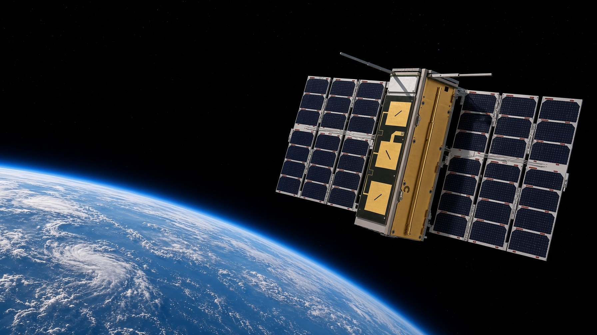
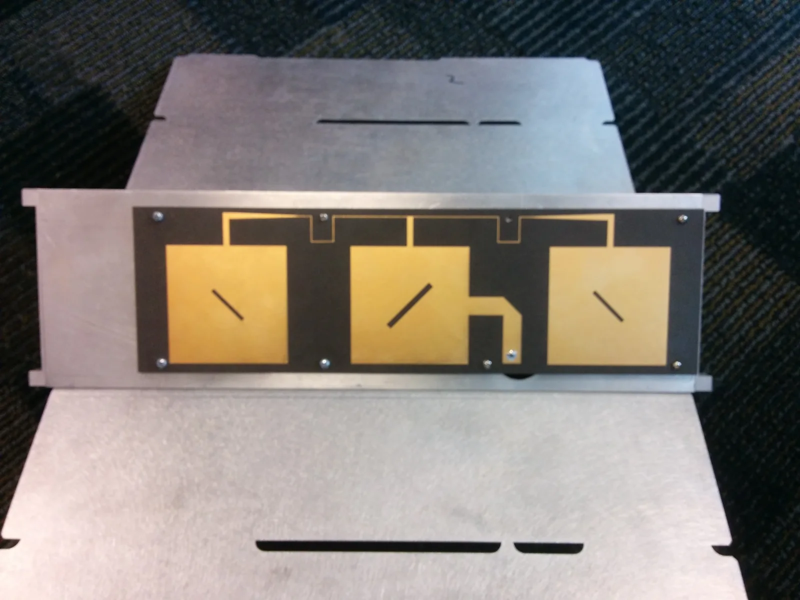
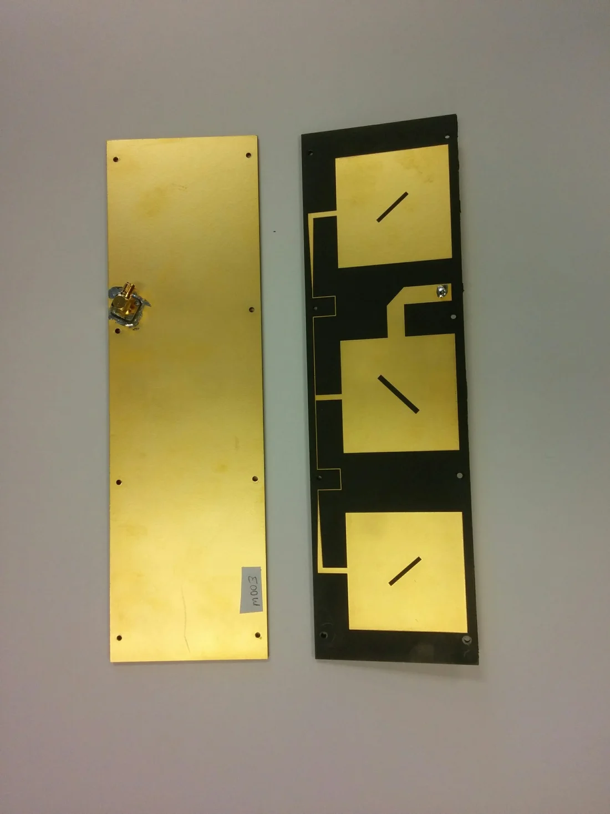
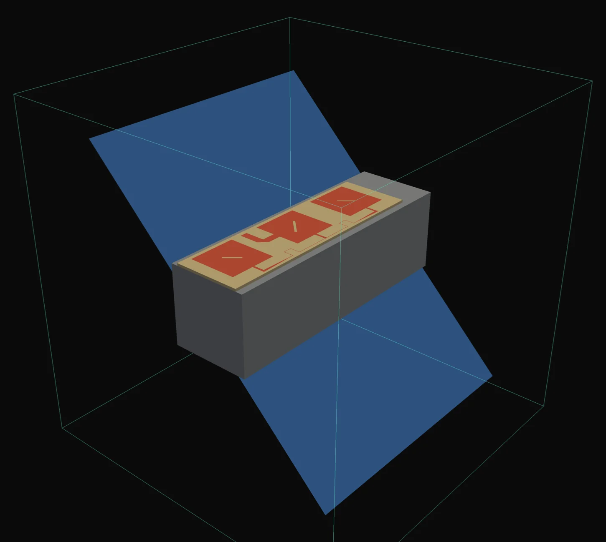
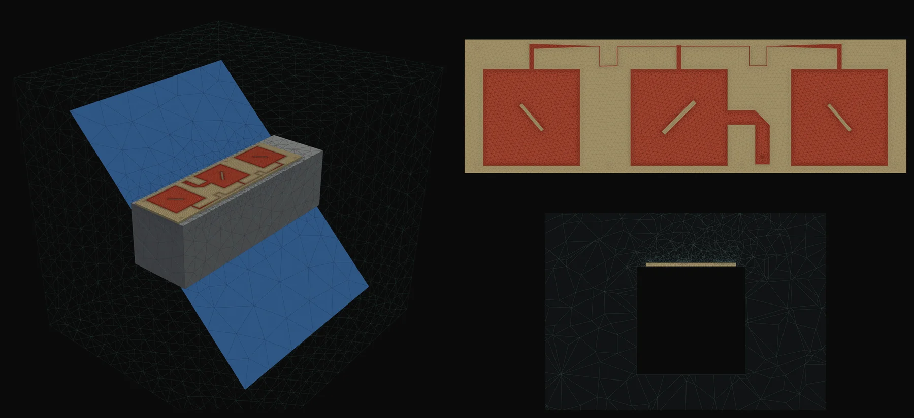
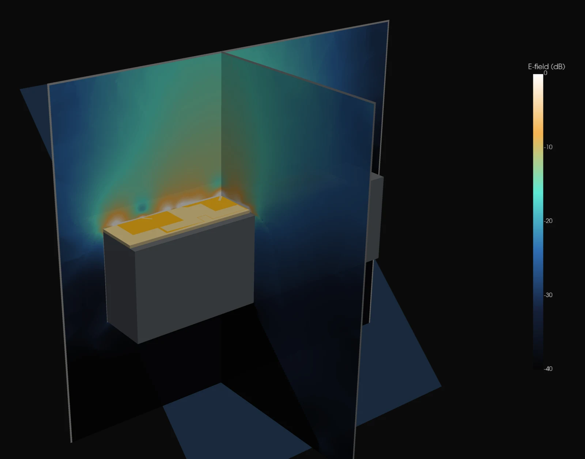
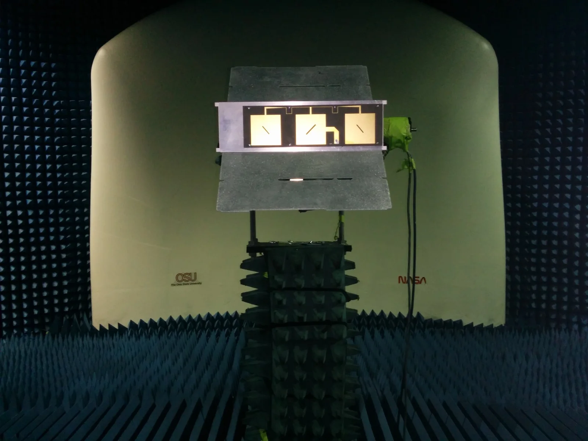
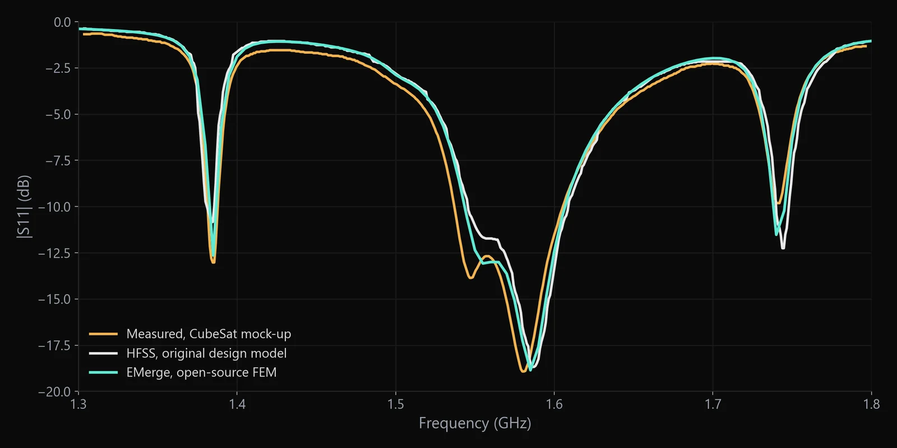
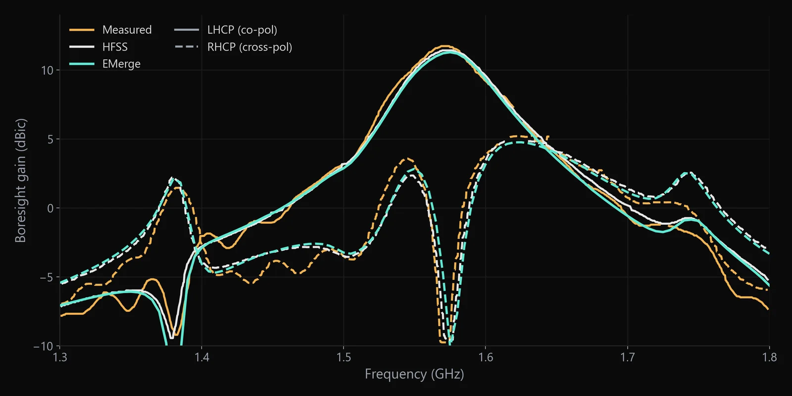
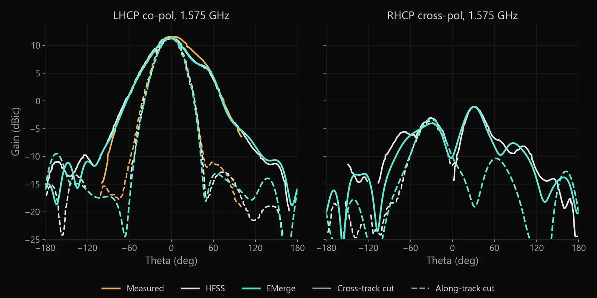

Commercial EM solvers set the standard for antenna work, and their licenses cost accordingly. Open-source tools have been getting better fast, but the honest question with any new solver is whether it gets real hardware right, not a textbook dipole in free space. So we picked a test with nowhere to hide: an antenna that was designed in HFSS, built, and measured on a spacecraft mock-up, with every one of those results still on file.
The antenna
The test article is a three-element patch array for GNSS reflectometry at the GPS L1 band (1.575 GHz). It's left-hand circularly polarized, because a GPS signal flips its handedness when it reflects off the ocean or the ground, and it sits on the nadir face of a 3U CubeSat looking down at those reflections. Each element is a square patch with a diagonal slot that splits it into two modes for circular polarization. One coax probe feeds the middle patch, and a printed network carries power out to the other two.
Then there's the spacecraft. Two deployed solar panels hang off the sides at 45°, close enough to the array to reshape both its pattern and its input match. Any solver that skips the platform will get this antenna wrong.



Rebuilding it without redrawing it
We didn't trace anything by hand. A script read the original HFSS project file and replayed its geometry operations straight into EMerge: the copper patches and feed network, the board, the mounting holes, the probe and its coax. Materials and the coax feed match the HFSS setup, and the copper carries finite conductivity, as it did in HFSS.
One simplification stayed in: the CubeSat body is a plain metal box in our model, where HFSS had the detailed CAD body with rails and standoffs. The solar panels are thin metal sheets in both.
The mesh
EMerge meshed the model with roughly 190,000 tetrahedra. The mesh is tight along the copper edges and through the board, where the fields change fastest, and opens up quickly in free space. A full sweep from 1.3 to 1.8 GHz in 5 MHz steps (101 frequencies, with boresight gain at every point) took about four hours on a laptop.

Inside the simulation
A solver that matches the curves also gives you the fields that produce them. Here's what EMerge shows at 1.575 GHz, solved on the same mesh.

The comparison
Each plot below carries three curves. The original HFSS simulation and the measurement of a flight-representative mock-up both come from the antenna's original test report. The mock-up went into a compact range with its panels attached, so the measurement includes the whole spacecraft, just like the simulations. The third curve is EMerge. We didn't tune the EMerge model against either reference.


The input match is where we looked first. EMerge follows the HFSS curve across the whole half-gigahertz span, including the shoulder on the low side of the main dip and the two narrow resonances well outside the band. Those narrow features are easy to miss with a coarse frequency grid or a careless model, so seeing them in the right places told us the platform was modeled properly.

Gain tells the same story. The co-polarized peak at L1 sits on the HFSS curve, and the cross-polarized curve reproduces its odd shape: a bump just below the band, a deep null right at L1 where the circular polarization is cleanest, and a rise above it. That null is narrow and sensitive. It moves if the slots or the feed are even slightly off, so it's a good check on the details.

In the patterns, the main beam matches in both planes. So does the lopsided shoulder in the cross-track cut, which the solar panels create; you can see it in the measured data too. The cross-polarization lobes line up in angle and level with HFSS.
Where it still differs. Far out in the pattern, beyond about 90° from boresight, EMerge and HFSS drift apart by a few dB. That's the region the plain-box spacecraft body affects most, so we'd expect the CAD body to close most of the gap.
Why this matters
A solver you can trust is one thing. A solver you can trust, run from Python, and run as many times as you like without a license server changes how simulation fits into engineering work. Parameter sweeps, design optimization, and training data for machine-learning surrogates all become scripts instead of manual sessions in a GUI, and they can run overnight on hardware you already own.
That's the work we do at Vectron: putting RF simulation inside automated design workflows, with the validation to back it up. EMerge is one of the tools in that kit now that we've seen it hold up against a real CubeSat antenna.
Have an antenna that needs a second opinion?
We model, simulate, and validate antennas on real platforms, and we build automated simulation pipelines for RF teams. If you're weighing an open-source solver against your current toolchain, we can run the comparison on your design.
EMerge is an open-source finite-element electromagnetic solver by Robert Fennis, available on GitHub. Simulations here used EMerge 2.6.1. HFSS and measured curves are digitized from the original test report for this antenna and redrawn for this post.